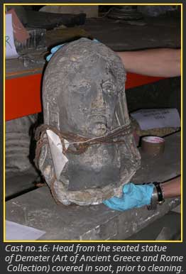
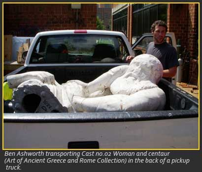

Student Exhibits
George Mason’s plaster casts were originally created as a learning tool for students. A major function of this site is to maintain this scholarly tradition while increasing public dialogue through the use of history and new media. George Mason students from every major and academic level are encouraged to contribute to the Plaster Cast Project by creating a digital exhibit. For examples on how to contribute take a look at current exhibits, upcoming projects, and future ideas.

Current Exhibits
Anna Jones: A Short Tour of a Few of the Plaster Casts at GMU.
Lucy R. Miller: The Last Casts: Neophytes with Good Chi.
Upcoming Projects
Cleaning plaster casts.
Shellie Meeks began cleaning the first installation of plaster casts at George Mason in 2004. She participated in four internships and cleaned over fifteen of the George Mason plaster casts. She is currently preparing a digital exhibit to inform the public about the cleaning process.
Future Ideas

The GMU plaster cast installation process:
How did almost 70 plaster casts move from a warehouse in New York to decoratively mounted on walls, in the display cases, and various locations around campus? What choices were considered in the casts’ placement, and how were they physically handled? This is a great project for students of all levels interested in the handling and installation process.
A digital exhibit that alters or enhances images:
Take pictures of the casts around campus and use your design skills to create a thematic exhibit of your artwork. This project is recommended for artists and students participating in a history and new media class at George Mason.